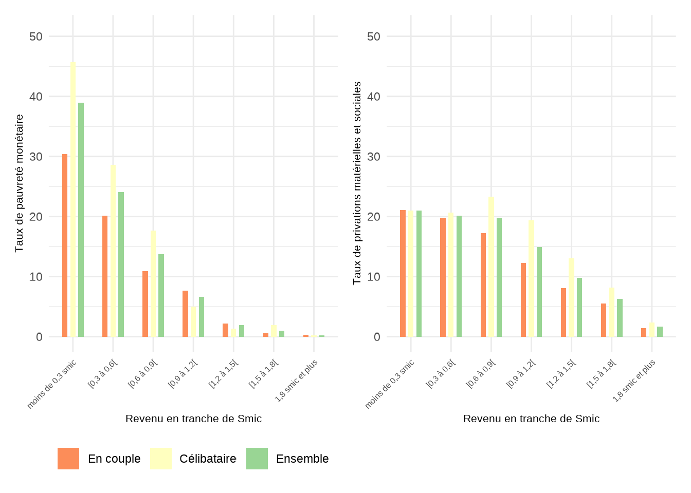

La reprise d’emploi est-elle toujours rémunératrice?
Les contradictions des politiques de lutte contre la pauvreté et comment les surmonter
Résumé
Depuis les réformes visant à permettre aux personnes de cumuler durablement revenus professionnels et prestations sociales, la reprise d’emploi est toujours rémunératrice. Mais travailler ne permet pas toujours de sortir de la pauvreté. Cela s’explique notamment par le fait que le revenu minimum garanti aux personnes d’âge actif est très faible et maintient la plupart du temps les personnes sans emploi sous le seuil de grande pauvreté : le travail paie que l’assistance, mais les travailleurs partent de trop bas.
Mots clés
Assistance, Prime d’activité, Smic, Gains à l’emploi, Trappes à inactivité
Introduction : les objectifs de la lutte contre la pauvreté par l’emploi
Y a-t-il de bonnes raisons de reprendre un emploi payé au salaire minimum quand on touche des prestations sociales ? Il existe des raisons non-monétaires de prendre un emploi, notamment en termes d’insertion sociale. Mais la question posée de façon récurrente est celle des gains monétaires à l’emploi. On peut ainsi distinguer deux questions : l’existence des gains, et la sensibilité des travailleurs à ces gains (l’élasticité de l’offre de travail). Nous nous intéressons ici à la première de ces questions. Dans un contexte où les aides sociales sont critiquées pour leur trop grande générosité et où les politiques de tout bord insistent sur la valeur travail, le travail doit payer et bien plus que l’assistance.
C’est ce qu’a encore demandé le premier ministre (de l’époque) le 3 octobre 2024 sur France 2. “Il faut que le travail paie plus que l’addition des allocation” a déclaré Michel Barnier, qui entendait alors lancer le “chantier de l’allocation sociale unique”, afin que “cela paye plus de travailler que de ne pas travailler”. Les ministres changent, de même que les circonstances et les instruments sociaux-fiscaux, mais ce discours est une constante depuis la création du RMI en 1989, alors que l’existence même de bénéficiaires de revenus d’assistance est considérée comme un problème public auquel il faut remédier (voir Allègre, 2024).
La stratégie nationale de prévention et de lutte contre la pauvreté (SNPLP), publiée en 2018 était plus précise, puisqu’un des objectifs, alors assigné à un “revenu universel d’activité” était de “faire en sorte que le travail paye et qu’il paye de la même façon dans tous les cas”. Cet objectif, qui implique de fusionner plusieurs instruments, semble avoir été abandonné. Nous verrons que le travail est certes rémunérateur, mais qu’il paye différemment selon la situation familiale.
Un deuxième objectif donné aux politiques de lutte contre la pauvreté est de faire en sorte que le travail permette d’échapper à la pauvreté. Cet objectif est inscrit dans la SNPLP (2018) soit “l’engagement d’une politique déterminée de sortie de la pauvreté par le travail”. S’il est implicitement admis que les personnes sans emploi puissent vivre sous le seuil de pauvreté, être pauvre bien que travailleur, travailleur mais pauvre, est perçu comme une anomalie que les politiques publiques doivent corriger (Allègre, 2024).
Enfin un troisième objectif attribué aux politiques de lutte contre la pauvreté est de “garantir un soutien financier aux ménages modestes” (SNPLP, 2018). Dans la stratégie de lutte contre la pauvreté, cet objectif est le plus souvent lié aux enfants et aux familles. Il s’agit de “garantir l’accès de tous les enfants aux biens et aux services essentiels”. L’affirmation “la stratégie pauvreté déploiera enfin des mesures concrètes et ancrées dans le quotidien des Français pour réduire les privations” est affirmé dans le chapitre nommé “garantir au quotidien les droits fondamentaux des enfants”. S’il est admis que les personnes sans emploi puissent être pauvres, il ne faut donc pas que leurs privations soient trop sévères, en particulier lorsqu’elles ont des enfants.
Plus généralement, “réduire les privations”, “garantir les droits fondamentaux” sont des objectifs qui concernent tout le monde, adultes et enfants. Depuis 1946, le préambule de la Constitution affirme ainsi “Tout être humain qui, en raison de son âge, de son état physique ou mental, de la situation économique, se trouve dans l’incapacité de travailler a le droit d’obtenir de la collectivité des moyens convenables d’existence”. Toutefois la façon dont ce droit est écrit ne définit pas explicitement ces moyens convenables d’existence et ne dit pas s’ils doivent être procurés en nature (logement, santé, aide alimentaire…) ou en espèces. Alors que ce préambule date de 1946, le RMI n’a été mis en place qu’en 1989. Pour les foyers sans revenus, le RMI puis le RSA garantissent des niveaux de vie inégaux mais proches selon le nombre d’enfants pour les couples et croissant avec le nombre d’enfants pour les familles monoparentales (graphique 1). Cependant, le calcul du niveau de vie pour les familles monoparentales a fait l’objet de critiques (voir par exemple Martin et Périvier et Drees).
Pour résumer, la lutte contre la pauvreté repose sur au moins trois objectifs, régulièrement réaffirmés par les pouvoirs publics :
1. Faire en sorte que le travail paie ;
2. Faire en sorte que le travail fasse sortir de la pauvreté ;
3. Garantir à tous la couverture des besoins essentiels ou minimaux.
Les trois premières parties de ce document évaluent le système actuel par rapport à ces trois objectifs. La quatrième partie discute des arbitrages auxquels les politiques de lutte contre la pauvreté font face et propose des réformes visant à atteindre au mieux ces trois objectifs.
1. La reprise d’emploi est toujours rémunératrice, mais pas toujours de façon homogène
1.1. Une analyse par cas-type
La reprise d’emploi est-elle rémunératrice ? Pour répondre à la question de façon concrète, nous raisonnons sur cas-type. Il s’agit d’illustrer les gains à la reprise d’emploi en prenant des exemples-type de situations de travail, de configuration familiale, de logement (pour calculer les allocations-logement) et éventuellement de modes de gardes des jeunes enfants. Dans ces situations, les gains à la reprise d’emploi, proviennent des salaires nets perçus et de la Prime d’activité. Les “coûts” proviennent de l’augmentation de l’impôt sur le revenu et de la baisse des prestations sociales (RSA, Allocations logement, prestations familiales…). La variable d’intérêt est le revenu disponible qui est calculé au niveau du ménage et ne tient pas compte de la répartition interindividuelle des revenus au sein des couples. L’analyse porte sur la variation du revenu disponible lorsqu’une personne passe de l’inactivité à l’emploi ou augmente sa durée de travail sans tenir compte des coûts associés en termes de transport ou d’habillement.
Définition : taux effectif de prélèvement et taux effectif de gain à l’emploi
|
Le cas-type général commenté dans le texte est celui d’un ménage éligible, sous condition de ressources, au RSA (l’individu référent est âgé entre 25 et 64 ans) et aux allocations logement1 (le ménage est locataire du parc privé). Pour les ménages non éligibles à ces prestations, les prestations sociales sont bien plus faibles, et les gains à la reprise d’emploi sont donc par construction plus importants. Pour les ménages avec enfants, nous supposons dans le cas général que les enfants sont d’âge scolaire (5, 8 ou 10 ans) mais la situation des familles ayant un enfant en bas âge qui nécessite un mode de garde est étudiée section 1.4.
Trois situations de reprise d’emploi sont analysées : le mi-temps au Smic horaire (699 euros mensuels), le temps-plein au Smic horaire (1399 euros mensuels) et le temps plein à 1,5 Smic horaire (2098 euros mensuels). Pour les couples, ces reprises d’emploi sont analysées dans le cas d’un conjoint inactif sans revenu, d’un conjoint chômeur (avec un montant d’allocation chômage égal au Smic mensuel) et d’un conjoint en emploi à temps-plein gagnant le Smic ou 1,5 fois le Smic. L’analyse n’est pas genrée, mais dans les couples, ce sont le plus souvent les femmes qui prennent des emplois à mi-temps, à la fois parce que le partage des tâches reste très inégalitaire et parce qu’elles ont des emplois dans des secteurs où elles plus sont plus susceptibles d’être en temps-partiel subi (ref). L’analyse est descriptive et ne présume pas que les ménages ou individus ont le choix entre les différents horaires de travail ou taux de salaire.
1.2 Des reprises d’emploi rémunératrices
Dans les cas types étudiés, le système socio-fiscal actuel garantit que la reprise d’emploi est toujours rémunératrice, mais pas nécessairement toujours dans les mêmes proportions.
Le cas d’une personne seule illustre la façon dont le système socio-fiscal assure que le travail paie mieux que l’assistance, même pour de petites durées de travail. Sans revenus d’activité, cette personne peut percevoir 851 euros de prestations sociales (559 euros de RSA et 292 euros d’allocations logement), ce qui est juste en dessous du seuil de grande pauvreté à 40% du niveau de vie médian2.
Si cette personne reprend un emploi rémunéré au Smic, son revenu disponible augmente que l’emploi soit à temps partiel ou à temps plein, en dépit de la baisse du montant de prestations sociales. Avec un emploi à mi-temps, le revenu disponible est de 1 191 euros et le taux effectif de gain à l’emploi (TEG) est de 48,6% (soit un taux effectif de prélèvement de 51,4%), ce qui veut dire que les ménages gardent en revenu disponible seulement 340 euros sur les 699 euros de salaire reçus. Cela s’explique par la baisse du montant d’aides au logement et par la perte du RSA, compensée en partie seulement par la prime d’activité. Avec un emploi à temps-plein, le revenu disponible double quasiment (+94%) et atteint 1656 euros (soit une hausse de 805 euros) avec un TEG de 57,5%, plus élevé que pour une emploi à mi-temps en dépit de la perte des aides au logement. Si l’emploi à temps plein est rémunéré à 1,5 Smic, le niveau de vie atteint 2 016 euros (hausse de 1 165 euros) et le TEG est de 55,5% car relativement à la situation d’inactivité, le travailleur perd à la fois le RSA et les aides au logement mais n’a pas droit à la prime d’activité.
Pour un couple avec deux enfants (âgés de 5 et 8 ans) initialement sans revenu et dont un des conjoints reprend un emploi à plein-temps, le gain de revenu disponible en euros est de 845 euros, soit un gain très proche de celui du célibataire sans enfant, et par conséquent un TEG également similaire (60,4% contre 57,5% pour une personne seule). Si le gain en euro est similaire, ce couple a un revenu disponible plus important en situation d’inactivité (1 652 euros) et le gain relatif est donc moindre (+51%). De plus, ce couple comporte davantage d’unités de consommation que le célibataire et pour une augmentation équivalente du revenu disponible, le gain en niveau de vie est deux fois plus faible que pour le célibataire sans enfant (402 euros par UC). Comparativement à une personne seule, le couple monoactif continue à percevoir du RSA avec un emploi à mi-temps, et il reste éligible aux aides au logement et à la prime d’activité avec un emploi rémunéré à 1,5 Smic. Mais alors que la personne seule franchit largement le seuil de pauvreté monétaire avec un emploi au Smic, le couple monoactif l’atteint tout juste avec un emploi à 1,5 Smic.
Définition : niveau de vie Le niveau de vie d’un ménage est un indicateur conçu pour comparer les revenus disponibles de ménages de configuration différentes en tenant compte des économies d’échelle liées à la vie commune et des dépenses pour les enfants. Il est obtenu en divisant le revenu disponible de l’ensemble du ménage par un nombre d’unités de consommation. En France et en Europe, les unités de consommation sont calculées par l’INSEE et Eurostat selon l’échelle d’équivalence dite de l’OCDE modifiée qui attribue 1 UC au premier adulte du ménage, 0,5 UC aux autres personnes de 14 ans ou plus et 0,3 UC aux enfants de moins de 14 ans (car considérés ayant moins de besoins). Selon cette convention, le niveau de vie est considéré identique pour une personne seule avec un revenu disponible de 2 000 euros, un couple sans enfant qui dispose 3000 euros (1,5x2000), ou un couple avec un enfants de 10 ans qui dispose de 3 600 euros (1,8x2000). |
La situation est un peu différente pour une personne en couple avec deux enfants si le conjoint est actif en emploi, rémunéré sur la base d’un Smic mensuel. Dans ce cas, le revenu disponible du couple avec deux enfants est de 2 497 euros en cas de monoactivité, ce qui le situe au-dessus du seuil de grande pauvreté, et la reprise d’emploi permet de franchir le seuil de pauvreté à 60 % même avec un emploi à mi-temps. La reprise d’emploi à temps plein au Smic est plus rémunératrice que pour une personne seule ou un couple monoactif avec deux enfants car la dégressivité des aides est moindre. Cela s’explique par le fait que le couple ne perçoit pas le RSA avant la reprise d’emploi et que celle-ci se traduit uniquement par une baisse des aides au logement du montant de prime d’activité du couple. Le gain associé au second emploi dans le couple est alors de 911 € ce qui correspond à un TEG de 65%.
Les gains à l’emploi sont encore plus importants si le revenu du conjoint, pour un même montant égal au Smic à temps plein, est une allocations chômage. Dans ce cas, lorsque le travailleur étudié n’a aucun revenu, le couple monoactif a un revenu disponible plus faible que dans le cas précédent (1 891 euros contre 2 497 euros) car contrairement au salaire, l’allocation chômage du conjoint n’ouvre pas droit à la prime d’activité. La reprise d’emploi a donc un effet plus faible sur le montant de prestations perçus et le gain à l’emploi pour un Smic à temps plein est de 1 090 euros, ce qui correspond à un TEG de 78%. Le taux effectif de gain est également élevé pour un emploi a mi-temps (71%) ou à temps plein avec un salaire de 1,5 Smic (83%).
Le système social et fiscal remplit donc l’objectif qui lui a été fixé depuis la mise en place du RSA en 2009 : rendre le travail plus rémunérateur que l’assistance, de façon pérenne et pour toutes les reprises d’emploi. Toutefois les gains effectifs à la reprise d’emploi sont loin d’être homogènes.
Pour les cas que nous avons étudiés, le taux effectif de gain pour le passage de l’inactivité à un emploi à temps plein rémunéré au Ssmic varie de 58% à 65% pour une personne seule selon le nombre d’enfants à charge et de 52% à 94% pour une personne vivant en couple selon le montant du revenu du conjoint, sa nature, et le nombre d’enfants à charge. Le TEG le plus faible est alors obtenu avec 3 enfants lorsque le conjoint est salarié au Smic car la prise d’emploi réduit à la fois les montants de prestations familiales (-97 €), d’aides au logement (-349 €) et de prime d’activité (-231 €). Le gain le plus élevé est obtenu avec un conjoint chômeur et aucun enfant à charge car le couple ne bénéficie initialement que des aides au logement (89€) et n’a donc que cela à perdre.
Le taux effectif de gain pour le passage de l’inactivité à un emploi à mi-temps au Smic est plus faible. Il varie de 48% à 58% pour une personne seule selon le nombre d’enfants à charge et de 36% à 87% pour une personne vivant en couple selon le montant du revenu du conjoint, sa nature, et le nombre d’enfants à charge. Comme pour l’emploi à temps plein, le TEG le plus faible est alors obtenu avec 3 enfants lorsque le conjoint est salarié au Smic et le plus élevé est obtenu avec un conjoint chômeur et aucun enfant à charge.
Encadré : La prime d’activité Depuis le 1er janvier 2016, la prime d’activité a remplacé le RSA activité et la prime pour l’emploi. Comme les instruments qu’elle remplace, la prime d’activité vise deux objectifs : soutenir l’offre de travail grâce à des incitations financières accrues et compléter les revenus des travailleurs ayant des revenus modestes. La prime pour l’emploi et le RSA activité ont été critiqués pour leur faible efficacité (Cahuc, 2002 ; Domingo et Pucci 2014). Individualisée, la prime pour l’emploi versait de faibles montants à de nombreux bénéficiaires : trop faible pour être véritablement incitative, elle bénéficiait de plus à des ménages à niveau de vie intermédiaire et non aux plus modestes. Le RSA activité tenait compte de la composition et du revenu du ménage : il était davantage ciblé sur les travailleurs pauvres et créait des incitations à la reprise d’emploi substantielles et contemporaines. Néanmoins, son efficacité était minée par un non-recours élevé (68 %, voir Domingo et Pucci, 2014). La prime d’activité est proche dans son fonctionnement du RSA activité : familialisée, versée mensuellement, après une déclaration trimestrielle de revenus, elle cible les travailleurs aux revenus modestes et amplifie les incitations à la reprise d’emploi par le mécanisme des bonus individuels . Elle est en outre clairement identifiée comme une prestation à destination des personnes exerçant une activité, ce qui évite qu’elle apparaisse stigmatisante aux yeux de ceux qui la perçoivent. Par conséquent, le non-recours est probablement bien plus faible que celui qui était observé pour le RSA activité, bien qu’il n’y ait pas d’estimation précise (DREES, 2022). La formule de calcul de la prime d’activité est la suivante : Prime d’activité du foyer = Montant forfaitaire (fonction de la situation familiale) + bonus d’activité individuels - forfait logement + prestations familiales + minima sociaux - 39 % des revenus professionnels - 100 % des revenus non professionnels Le montant de la prime d’activité versée au foyer est nul si le résultat de ce calcul est inférieur à 15 euros. Si elle permet de garantir des gains entre inactivité et revenus du travail dans presque toutes les configurations, la prime d’activité a des limites. Par rapport à une hausse du Smic, c’est une prestation sociale et pas un salaire donnant des droits sociaux (chômage, retraites). Comme la formule le montre, les revenus non professionnels du foyer sont déduits à 100%. Par conséquent, si dans un couple biactif l’un des conjoints perd son emploi pour du chômage indemnisé, non seulement il perd son bonus d’activité individuel, mais son allocation chômage est déduite intégralement ce qui peut annuler la prime d’activité pour son conjoint resté en emploi. En pratique, dans la plupart des cas, les ménages incluant un chômeur indemnisé (ou un retraité) ne touchent pas de prime d’activité. Enfin, visant à lutter contre les trappes à inactivité, les compléments de revenus pour travailleurs pauvres sont critiqués en raison des trappes à bas salaire qu’ils engendrent. En matière d’incitations, ces compléments ciblés dégressifs ne peuvent que creuser une nouvelle trappe pour reboucher l’autre : si la prime d’activité augmente l’écart entre emploi et chômage ou inactivité, elle ne peut que réduire le gain de niveau de vie induit par une hausse de salaire. |
1.3 La nouvelle courbe des gains marginaux à l’emploi
Le graphique suivant décrit les gains marginaux pour quatre configurations familiales à six niveaux de revenu (de 0,5 à 2 Smic mensuel à temps-plein). Le gain marginal à l’emploi est ce qui reste au foyer lorsque l’individu analysé augmente ses revenus du travail de 100 euros. Les cas-types analysés sont ceux de la personne isolée sans enfant, du couple monoactif avec deux enfants, du couple biactif sans enfant ou avec deux enfants, en supposant que le conjoint ou la conjointe est employée au Smic à plein-temps.
Le graphique montre que sur la plage de revenus considérée, les gains marginaux à l’emploi sont plus élevés en bas de l’échelle de revenus et en haut… et plus faible au milieu, autour de 1 à 1,2 Smic. Cela veut dire à l’inverse que les taux marginaux effectifs de prélèvement sont en U inversé… La courbe actuelle suit ainsi le profil opposé de la courbe “optimale” en U des taux marginaux, telle que décrite par Diamond (1998) ou Saez (2001). Selon ces auteurs, les taux marginaux effectifs de prélèvement les plus bas devraient s’appliquer au milieu de l’échelle de revenus, là où les individus sont les plus nombreux. C’est d’ailleurs ce que faisaient les systèmes socio-fiscaux avant les réformes dans années 2000.
Avec les réformes visant à rendre le travail payant, les plus faibles gains à l’emploi se sont déplacés au niveau du Smic ou juste au-dessus du Smic. Certains pourraient dire que les “trappes à inactivité” se sont transformées en “trappes à bas salaires” mais ces expressions ne sont pas appropriées puisqu’elles impliquent que les travailleurs répondent à ces plus faibles incitations. Or, il est difficile de trouver des études confirmant ces effets sur l’offre de travail en pratique. Selon le rapport Bozio-Wasmer (2024) sur les politiques d’exonérations sociales (ciblées autour du Smic à temps-plein), si les effets théoriques des exonérations et des primes d’activité dégressives sont soulignés régulièrement par les économistes, “la démonstration empirique de l’existence de trappes à bas salaire est néanmoins délicate”, la littérature disponible en France offrant des évidences empiriques limitées.
Le débat sans fin sur les trappes plaiderait pour une égalisation des gains marginaux à l’emploi (ou des taux marginaux de prélèvement) selon le niveau de revenu. Si l’argument le plus convaincant pour des gains à l’emploi élevés est celui de la rémunération du mérite, alors il n’y a pas de raison fondamentale pour que les gains marginaux ou taux marginaux de prélèvement fluctuent dans le bas de l’échelle des revenus.
1.4 Que change la prise en compte des coûts de garde des jeunes enfants ?
Pour illustrer les effets du coût de la garde sur les gains à l’emploi des familles avec de jeunes enfants, nous étudions ici deux cas-types de familles avec un enfant de 1 an : une mère isolée et celui un couple dans lequel le conjoint travaille à temps-plein rémunéré au Smic. On suppose que lorsque la mère travaille, l’enfant est gardé par une assistante maternelle, la garde onéreuse la plus courante, au prorata du temps de travail de la mère.
Comme le montre le graphique suivant, le coût net de la garde est relativement modéré et représente 300 euros maximum, soit environ 10% du revenu disponible lorsque les deux conjoints sont au Smic à temps-plein. Néanmoins on peut également voir que le coût net de la garde augmente rapidement entre le mi-temps et le temps-plein (il passe de 50 à 300 euros). Par conséquent, les incitations à passer du mi-temps au temps-plein deviennent faibles dans ces cas.


2. L’emploi ne protège pas toujours de la pauvreté
Si l’emploi est toujours rémunérateur, il ne protège pas toujours de la pauvreté monétaire. Ceci apparaît clairement sur cas types mais peut se voir également par l’existence d’une pauvreté monétaire en emploi, même pour des bénéficiaires de la prime d’activité3. En 2022, selon l’INSEE le taux de pauvreté sur l’ensemble de la population était de 14,4%. et celui des personnes en emploi de 7,8 %. Mais en se limitant aux personnes en emploi vivant dans un ménage allocataire de la prime d’activité, ce taux atteint 15,2 %. L’emploi réduit ainsi beaucoup le risque de pauvreté monétaire mais ne l’annule pas : sur les 9,1 millions de personnes vivant sous le seuil de pauvreté monétaire, 2 millions sont en emploi (INSEE).
Définition : la pauvreté monétaire et les privations matérielles et sociales D’après la statistique publique (INSEE, Eurostat), un individu est pauvre d’un point de vue monétaire si le niveau de vie du ménage auquel il appartient est inférieur à 60% du niveau de vie médian. La pauvreté monétaire est ainsi un concept relatif : si le niveau de vie de tous les ménages augmente de 10%, le taux de pauvreté monétaire restera inchangé. Par convention, le seuil de pauvreté monétaire est le même dans tout le pays, mais il varie au sein de l’Union Européenne d’un pays à l’autre. La pauvreté monétaire est donc définie uniquement par les revenus. La seule prise en compte des différences de besoins se fait par l’échelle d’équivalence qui définit le nombre d’unités de consommation du ménage selon sa composition. Le niveau de vie ne prend donc pas en compte le coût du logement ni les besoins différenciés en transport, logement ou chauffage selon le lieu de vie. Le dernier seuil de pauvreté monétaire publié par l’Insee est de 1 216 euros par UC pour l’année 2022. Pour le comparer aux montants des prestations en 2024, nous avons appliqué à ce seuil l’inflation observée entre 2022 et juillet 2024, ce qui amène à un seuil de 1 309 euros par UC. Le taux de privation matérielle et sociale est un indicateur social utilisé dans l’union européenne, défini comme la part de personnes ne pouvant pas couvrir les dépenses liées à au moins cinq éléments de la vie courante sur treize considérés comme souhaitables, voire nécessaires, pour avoir un niveau de vie acceptable (Guio et al, 2017). L’intensité de la pauvreté mesure l’écart relatif entre le niveau de vie médian de la population pauvre et le seuil de pauvreté. |
Le niveau de vie d’un célibataire sans enfant sans revenus d’activité et recourant à toutes les prestations est de 851 euros par uc ce qui est inférieur de 35% au seuil de pauvreté monétaire : son intensité de pauvreté est donc de 35%. Un emploi à mi-temps au Smic ne lui permet pas de franchir le seuil de pauvreté (intensité de 9%). Le célibataire sans enfant franchit le seuil de pauvreté monétaire avec un Smic à plein temps même s’il ne recourt pas à la prime d’activité et son niveau de vie atteint 126% du seuil s’il y recourt. En revanche, un emploi à mi-temps ne permet pas se sortir de la pauvreté même si la prime d’activité en réduit l’intensité (de 30% avant prime à 9% après).
Une personne isolée avec enfant(s) en emploi à plein-temps au Smic est au-dessus du seuil de pauvreté monétaire, qu’elle ait un enfant (125%) du seuil), deux enfants (119%), ou trois enfants (124%) et elle le serait même sans la prime d’activité. Le système socio-fiscal permet donc bien aux parents isolés de sortir de la pauvreté lorsqu’elles travaillent au Smic à temps plein et la prime d’activité leur permet de dépasser largement le seuil. La prime d’activité permet même aux parents isolés d’atteindre4 le seuil de pauvreté avec un emploi à mi-temps au Smic.
Les revenus d’un couple monoactif dans lequel l’un des conjoints travaille au Smic à plein-temps, et l’autre conjoint est sans revenu ; permettent tout juste d’atteindre le seuil de pauvreté si le couple n’a pas d’enfant à condition que celui-ci recoure à la prime d’activité (sinon le niveau de vie atteint seulement 76% du seuil de pauvreté). A ce niveau de revenus, le système social ne compense pas entièrement la charge des enfants, et le niveau de vie des couples monoactifs avec enfants est légèrement plus faible quand ils ont des enfants que quand ils n’en ont pas. L’intensité de la pauvreté monétaire est alors de 7% s’ils ont un enfant, 9% avec deux enfants, et 5% avec trois enfants.
Les couples biactifs avec deux emploi au Smic à temps-plein ont un revenu disponible avant prime d’activité supérieur au seuil de pauvreté et dépassent largement ce seuil avec la prime. Qu’ils recourent ou non à la prime d’activité, le système socio-fiscal ne compense que partiellement la charge des enfants telle qu’elle est appréhendée par les unités de consommation. Un couple biactif au Smic recourant à la prime d’activité a ainsi un niveau de vie équivalent à 153% du seuil de pauvreté s’il n’a pas d’enfant, 135% du seuil de pauvreté s’il en a un, 124% avec deux enfants et 117% avec trois (contre 142%, 119%, 108% et 110% respectivement s’il n’y recourt pas).

Les graphiques représentent les taux de pauvreté monétaire (gauche) et de privation matérielle et sociale (droite) des individus selon leur revenu salarial mensuel (en tranche de Smic) et leur situation conjugale (en couple ou célibataire). Le taux de pauvreté monétaire baisse nettement lorsque les revenus salariaux augmentent. Cette baisse de la pauvreté est liée directement à l’augmentation des salaires (composantes du niveau de vie), mais aussi à des caractéristiques plus favorables.
Le taux de privation matérielle et sociale baisse également lorsque le salaire augmente, mais la baisse est plus franche seulement à partir du Smic. Cela suggère qu’il existe un coût à travailler de faibles nombre d’heures et que ce coût compense la hausse du salaire net et du revenu disponible. Ce coût peut être lié au transport ou à la garde d’enfants.
Si l’hypothèse du coût pour les emplois à temps-partiel est juste, il existe deux réponses possibles en termes de politiques publiques : inciter de façon monétaire les individus pour qu’ils acceptent ces emplois ou favoriser une norme de plein-emploi. Avant d’exposer nos recommandations (section 4), on peut noter qu’inciter au temps-partiel ou très-partiel, que ce soit côté entreprises ou côtés individus, est potentiellement coûteux socialement en présence de coûts fixes à l’emploi (par exemple sous la forme de transports). Cette politique peut par exemple inciter un individu à accepter un emploi à temps très partiel et éloigné de chez lui. Or, ce type d’emploi ne sert pas toujours de marchepied et peut réduire les efforts de recherche et la probabilité d’obtenir un emploi de meilleure qualité (voir par exemple Autor et Houseman, 2006).
3. Le revers des incitations est l’augmentation de l’intensité de la pauvreté des personnes sans emploi
Dans les cas-types étudiés, les revenus d’assistance procurent un niveau de vie inférieur au seuil de pauvreté à 60%, et même inférieur au seuil de grande pauvreté à 40% pour les couples et les personnes seules (graphique).
Le niveau de vie des ménages sans revenus d’activité est faible. Il a décru dans le temps et relativement aux autres revenus. Depuis 1990, le niveau du minimum social en direction des personnes d’âge actif a ainsi progressé bien moins vite que le niveau du minimum vieillesse (ASPA) ou de l’allocation adulte handicapée (AAH) (graphique).
En 1989, la loi instaurant le RMI a pour principal objectif de donner un minimum social pour les personnes valides d’âge actif. Si l’objectif est principalement distributif, le législateur a néanmoins voulu préserver les incitations à travailler en fixant le niveau du RMI à 50 % du SMIC à temps plein (mais en l’indexant sur l’inflation et non pas sur le niveau du Smic ou du SMPT). Les débats font alors apparaître la volonté de garder une norme d’emploi à plein-temps. Dans les années 1990, le nombre d’allocataires augmente rapidement et atteint un niveau non anticipé par les décideurs publics : de 500 000 allocataires en 1990, ce nombre dépasse le million en 1996. Face à cette montée rapide, le discours sur les « trappes à pauvreté » se répand. En 2001, l’introduction de la prime pour l’emploi (PPE) est une première réponse à ce discours. La PPE étant accusée d’être mal ciblée et de pénaliser les emplois à temps partiel, le RSA activité prend la relève en 2009 et permet de garantir que le revenu disponible d’un foyer augmente lorsque ses revenus d’activité augmentent, même à temps partiel ou très partiel. Il est ensuite remplacé par la prime d’activité en 2015, revalorisée lors de la crise des gilets jaunes pour les salaires proches du Smic. Durant cette période d’attention aux gains à l’emploi et à la pauvreté laborieuse, le montant de base du RSA est peu revalorisé. Quelque part, le dilemme entre incitation monétaire et redistribution est indépassable : incitation et inégalités sont les deux face de la même pièce.
Pourtant, malgré l’augmentation des gains à la reprise d’emploi via le creusement de l’écart entre le RSA et le SMIC et la montée en charge des compléments de revenus pour travailleurs pauvres, la part d’allocataires du RSA dans la population d’âge actif a augmenté, passant de 3,0% en 2008 à 4,1% en 2022. La réduction du niveau de vie relatif du RSA n’a donc pas eu d’effets visibles en termes de baisse du nombre d’allocataires.
Conclusion : dépasser les dilemmes par la redistribution réglementaire ?
La réforme consistant à augmenter le socle nous parait la plus juste dans la mesure où elle réduit fortement les inégalités, avec -probablement- de très faibles coûts en termes d’efficacité et d’emploi. Le problème principal d’une telle réforme est son coût, 24 milliards d’euros à recours inchangé. On peut considérer que ce que montant est le coût de l’injustice du système actuel tout en reconnaissant qu’il pourrait être possible de faire mieux pour la population concernée avec le même budget, autrement qu’avec ces prestations. Il existe en effet une autre solution permettant de dépasser les dilemmes monétaires exposés dans ce document. On peut parler de redistribution réglementaire ou de redistribution des droits. De même que l’augmentation du Smic est potentiellement peu ou pas coûteuse, jusqu’à un certain niveau, en termes de finances publiques, c’est également le cas du renforcement des droits des travailleurs les plus précaires, par exemple en renforçant le droit au passage au temps-plein ou en pénalisant la fragmentation journalière du travail. Devetter, Pucci et Valentin (2020) montrent que le Smic n’est pas une protection suffisante contre la pauvreté des travailleurs, du fait du temps partiel contraint dans des métiers dont le taux horaire est faible. Le seuil de bas salaire mensuel (défini à 60% du salaire médian) étant proche du Smic mensuel, par construction les bas salaires manquent d’heures dans le mois par rapport à un temps-plein. Les métiers les plus touchés par les bas salaires sont les métiers du care, assistantes maternelles, aides à domicile (66% de bas salaires), les métiers du nettoyage (47%), les métiers de l’hôtellerie-restauration (50%). Ces trois secteurs concentrent 43% des bas-salaires mensuels. Or ces professions concentrent forte amplitude et faible densité de la journée de travail. Une réglementation plus protectrice permettrait de réduire le recours au temps-partiel, ce qui pourrait même limiter les besoins en termes de prime d’activité. Le coût serait reporté sur les consommateurs de ces services. Le service de nettoyage, l’aide aux personnes et la restauration n’étant pas délocalisables, les risques sur l’emploi seraient limités.
Notes de bas de page
On suppose que le ménage est locataire en zone 2 des aides au logement (ville moyenne) pour un loyer compris entre 1 et 2,5 fois le loyer plafond.↩︎
Son niveau de vie équivaut à 39% du niveau de vie médian.↩︎
Si la prime d’activité permet à certains foyers de franchir le seuil de pauvreté monétaire, l’analyse par cas types montre que certains foyers à bas salaire n’y sont pas éligibles. S’y ajoutent ceux qui ne recourent pas à cette prestation bien que leur niveau de vie soit inférieur au seuil de pauvreté monétaire.↩︎
Avec 2 enfants, le niveau de vie prime d’activité comprise atteint 98% su seuil de pauvreté. Il est égale au seuil avec avec enfant et le dépasse de 4% acvec trois enfants.↩︎
Pour les plus riches, grâce au prélèvement forfaitaire unique (PFU) le taux d’imposition est plus faible sur les revenus du capital que sur les revenus du travail.↩︎
Dès l’instauration du RMI, un mécanisme d’intéressement a été mis en place, permettant le cumul temporaire des revenus d’assistance et des revenus du travail. Cet “intéressement” devait servir de marchepied vers l’emploi stable à plein-temps. Comme l’insertion professionnelle des bénéficiaires du RMI était jugée insatisfaisante, ce mécanisme fut réformé presque constamment. Entre 1989 et 1999, la prime d’intéressement était proportionnelle au salaire perçu lors des 750 premières heures d’emploi. Ensuite jusqu’en 2006, la prime était proportionnelle lors des 15 premiers mois de reprise. Puis jusqu’en 2009, la prime était forfaitaire pendant 9 mois, après 3 mois de cumul intégral.↩︎